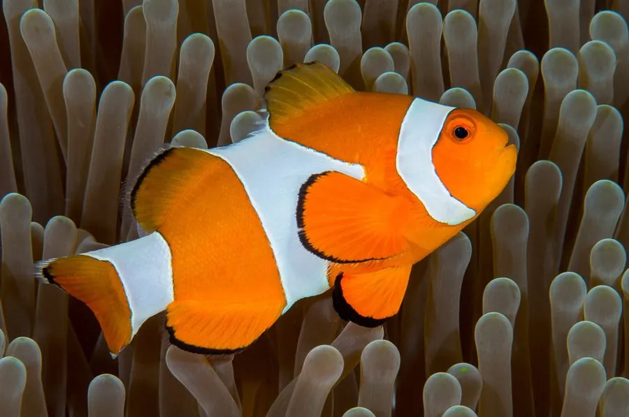

鱼类 · 动物界
眼斑双锯鱼 Amphiprion ocellaris

橙白相间的珊瑚礁小鱼，与海葵共生，体表黏液让它不怕海葵的刺细胞，是一种雄性先熟的雌雄同体鱼类。
- 分类
- 门脊索动物门纲硬骨鱼纲目鲈形目科雀鲷科属双锯鱼属
- 栖息环境
- 热带珊瑚礁浅水区，常与奶嘴海葵等大型海葵共生
- 地理分布
- 印度洋至西太平洋热带海域，包括安达曼海、印度尼西亚、菲律宾、澳大利亚北部和琉球群岛
- 保护级别
- IUCN 无危（LC）；中国未列入国家重点保护野生动物名录
物种志
眼斑双锯鱼体呈椭圆形、侧扁，通体鲜橙色，体侧有 3 条镶黑边的白色竖带，背鳍、臀鳍和尾鳍的边缘也镶着黑色。成鱼体长一般 6–8 cm，最大约 11 cm，雌鱼比雄鱼略大。它的皮肤能分泌一层特殊黏液，这层黏液可以抑制海葵刺细胞的发射，使它能在海葵触手之间自由穿行，并把海葵当作睡觉和躲避天敌的庇护所。
眼斑双锯鱼生活在印度洋至西太平洋的热带珊瑚礁，水深多在 1–15 m，以浮游甲壳类、藻类和海葵吃剩的残渣为食。每个海葵群里通常有一尾体型最大的雌鱼、一尾繁殖雄鱼和若干未成熟个体；它是雄性先熟的雌雄同体鱼类，若雌鱼死亡，最大的雄鱼会在数周内转变为雌鱼。繁殖时雌鱼在岩石表面产卵 100–1000 枚，雄鱼负责扇水护卵约 6–8 天。它也是水族贸易中交易量很大的观赏鱼，目前野外种群尚属稳定，IUCN 将其评为无危。
形态与习性
- 食性以浮游甲壳类、藻类和海葵残渣为食
- 体长一般 6–8 cm，最大约 11 cm
- 寿命野外约 6–10 年
- 繁殖雄性先熟，雌鱼死亡后最大的雄鱼转变为雌鱼
- 产卵每窝 100–1000 枚，雄鱼护卵约 6–8 天
- 栖息深度珊瑚礁浅水区，水深 1–15 m
趣味知识
- 小丑鱼并不“丑”，名字来自它橙白相间的条纹，像马戏团小丑的装扮。
- 体表黏液能抑制海葵刺细胞发射，让它能安全地睡在海葵触手之间。
- 一个海葵群里只有一尾雌鱼，而它原本是一尾雄鱼转变来的。